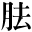
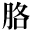
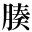
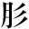
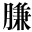
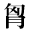

●寺田寅彦『寺田寅彦随筆集第二巻「科学について」』
●有島武郎『星座』
●夏目漱石『虞美人草』
●宮沢賢治『ポラーノの広場』
●森鴎外『山椒大夫』
●夢野久作『瓶詰地獄他』
●カミイユ・ルモンニエエ作、森鴎外（森林太郎）訳『聖ニコラウスの夜』
| 1_90_42.gif |
●南方熊楠『十二支考（１）虎に関する史話と伝説民俗』 |
|
|  | 1_90_44.gif |
●中原中也『山羊の歌』 |
|  | 1_90_45.gif |
●国木田独歩『二老人』 |
| 1_90_47.gif |
●桑原隲蔵『支那人の食人肉風習』 ●寺田寅彦『寺田寅彦随筆集第二巻「科学について」』 |
|
|  | 1_90_48.gif |
●アルベエル・サマン、森鴎外（森林太郎）訳『クサンチス』 |
|
|
1_90_51.gif |
●芥川龍之介『白』 ●有島武郎『星座』 ●夏目漱石『虞美人草』 ●宮沢賢治『ポラーノの広場』 ●森鴎外『山椒大夫』 ●夢野久作『瓶詰地獄他』 ●カミイユ・ルモンニエエ作、森鴎外（森林太郎）訳『聖ニコラウスの夜』 |
|  | 2_85_17.gif |
●内藤湖南『爾雅の新研究』 ●南方熊楠『十二支考（１）虎に関する史話と伝説民俗』 |
| 2_85_34.gif |
●南方熊楠『十二支考（１）虎に関する史話と伝説民俗』 |
|
| 2_85_37.gif |
●中原中也『山羊の歌』 |
|
|  | 2_85_43.gif |
●尾崎紅葉『金色夜叉』 |
| 2_85_45.gif |
●尾崎紅葉『金色夜叉』 ●国木田独歩『運命論者』 ●国木田独歩『湯ヶ原ゆき』 |
| 0212_5393.gif |
●泉鏡花『義血侠血』 |
|
| 0212_5438.gif |
●橋本進吉『古代国語の音韻に就いて』 |
|
|  | gaiji001.gif |
●徳冨蘆花『謀叛論（草稿）』 |
| gaiji002.gif |
●内藤湖南『易疑』 |